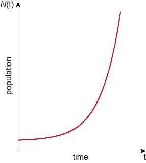
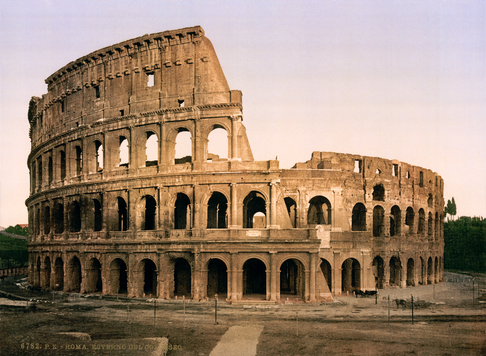
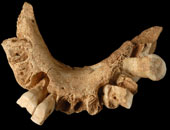

This gear revolves once every 10 seconds.
Because of the 1/5 ratio between small and large cog-wheel in each gear this one revolves at 1/5th the speed: 10×5=50 seconds.
That means this gear revolves once every 10×5×5×5×5=6250 seconds or ∼1.5 hours, (feel free to grab a stop-watch and check ..).

By the magic of exponential growth (or deceleration in this case), This gear will revolve once every 10×58 seconds, or about 45 days.
10×512 ∼77 years: This gear has turned once since the start of WWII.

10×514 ∼1,935 yrs: One turn since construction of the Colosseum.
10×516 ∼48,000 yrs: One turn since start of the Later Stone Age.
One more full turn is estimated to bring us the current ice age's next Glacial Period

10×518 ∼1.2 m. yrs:
One turn since the estimated first European.

10×521 ∼150 m. yrs: Stegosauruses!!.
10×524 ∼18 bn. yrs:
This gear hasn't made a full turn since the Big Bang.